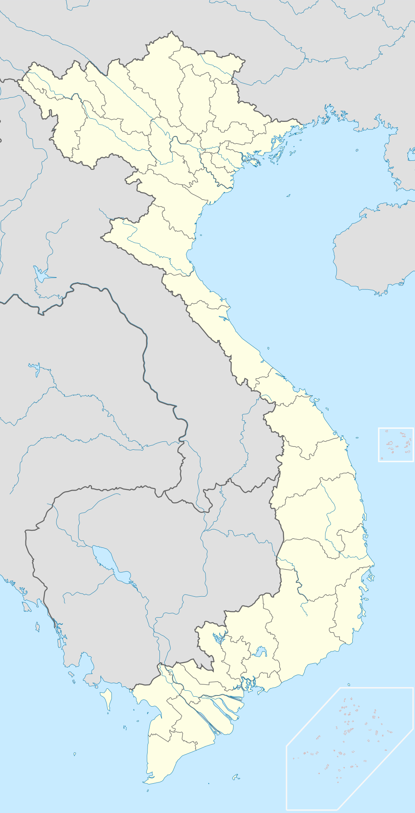

Section 1: Bản Đồ Chuẩn & Số Liệu Chính Thức
BẢN ĐỒ DỮ LIỆU AN SINH VIỆT NAM
Bản đồ hành chính chuẩn mực của nước Cộng hòa Xã hội Chủ nghĩa Việt Nam, khẳng định chủ quyền lãnh thổ trọn vẹn bao gồm Quần đảo Hoàng Sa và Quần đảo Trường Sa. Áp dụng hệ thống 34 đơn vị hành chính cấp tỉnh (28 tỉnh và 6 thành phố trực thuộc Trung ương) theo Nghị quyết số 202/2025/QH15 và Quyết định số 19/2025/QĐ-TTg từ ngày 01/07/2025.
Hệ Thống Hành Chính 34 Đơn Vị Cấp Tỉnh (Từ 01/07/2025)

★ Hà Nội
Hải Phòng
Quảng Ninh
Nghệ An
Đà Nẵng
⭐ QĐ. Hoàng Sa
Đắk Lắk
Khánh Hòa
⭐ QĐ. Trường Sa
TP.HCM
Cần Thơ
Hà Nội - Thủ đô: Trung tâm chính trị, văn hóa của cả nước. Triển khai xuất sắc chính sách BHYT toàn dân, thanh toán viện phí bằng CCCD gắn chip và ứng dụng VssID.
* Lưu ý lịch sử: Hệ thống 63 tỉnh/thành phố là mô hình áp dụng trước ngày 01/07/2025.
Phạm vi: Số liệu toàn quốc năm 2024
Dân số: 101.112.656 người (01/04/2024 - Cục Thống kê)
95,523 triệu
Số người tham gia BHYT
20,11 triệu
Số người tham gia BHXH
Khoảng 42,71% lực lượng lao động trong độ tuổi
Nguồn: Bảo hiểm Xã hội Việt Nam (2024)
Xem nguồn BHXH Việt Nam ↗
16,093 triệu
Tham gia BHTN (Thất nghiệp)
Khoảng 34,18% lực lượng lao động trong độ tuổi
Nguồn: Bảo hiểm Xã hội Việt Nam (2024)
Xem nguồn BHXH Việt Nam ↗
2,24%
Tỷ lệ thất nghiệp
Lực lượng LĐ: khoảng 53,0 triệu người
Nguồn: Cục Thống kê (Tổng cục Thống kê)
Xem nguồn Cục Thống kê ↗

Năm 2024: Số liệu toàn quốc ghi nhận 95,523 triệu người tham gia BHYT (đạt 94,2% dân số) và 20,11 triệu người tham gia BHXH (Bảo hiểm Xã hội Việt Nam).